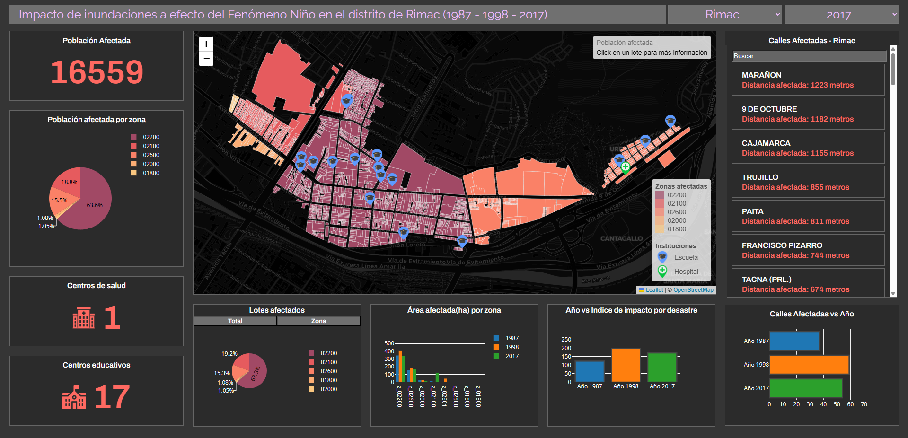
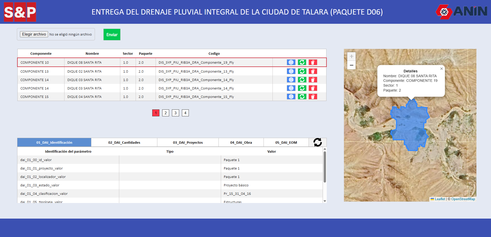

1. Aplicativo Web para el Análisis del Impacto de Inundaciones en los Distritos de Rímac y Lurigancho durante los Fenómenos del Niño en los Años 1987, 1998 y 2017.
El Aplicativo Web desarrollado tiene como objetivo proporcionar una plataforma interactiva para analizar el impacto de las inundaciones ocasionadas por el fenómeno del Niño en los distritos de Rímac y Lurigancho durante los años 1987, 1998 y 2017. Esta aplicación integra información raster y vectorial proveniente de instituciones públicas, que ha sido procesada utilizando el software QGIS para su posterior visualización y análisis.
Link del aplicativo: https://davidct95.github.io/dashboard.github.io/
2. Interfaz de Edición para el Proyecto de Drenaje Pluvial Integral de la Ciudad de Talara
La Interfaz de Edición desarrollada constituye una herramienta para el Proyecto de Drenaje Pluvial Integral de la Ciudad de Talara. Esta interfaz está diseñada para gestionar la información geoespacial relacionada con el sistema de drenaje pluvial, ofreciendo funcionalidades de edición y actualización de datos en tiempo real.
